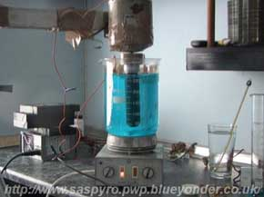
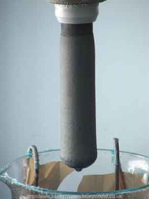

If you are going to make this type of Anode you had better use a professional set up. If there are any flaws (visible to the naked eye or smaller) in the Lead Dioxide coat, the Anode will fail.
Use large tank or better to have two tanks. One for plating and one for adding Lead ion and reducing Nitric Acid concentration with a pump in between.
High quality Graphite pretreated correctly.
High grade chemicals.
Surfactant.
Tight temperature control.
Thick coating of Lead Dioxide, at least 3mm, 5mm is better.
NO CORNER CUTTING......PERIOD.
You could try using a flat plate of Graphite and drilling lots of holes, countersinking each hole and then plating. This may help Lead Dioxide to adhere and is similar to what is done when Titanium is used as a substrate.
When pH is controlled in a Chlorate cell it has much much less erosion effect on Graphite. It is probably wise to only use a GSLD Anode in a pH controlled cell or keep it for making Perchlorate (from Chlorate) only.
There are some nice Anodes below. They were made by the spinning method in a good setup.
It should be noted that they all fell apart soon after they were put into a Chlorate cell. Perhaps the thickness of coat was not great enough. When visibly good Lead Dioxide coats are examined under a microscope lots of flaws (pin holes etc) can be seen. If theses flaws go all the way to the Graphite substrate, failure of the Anode will occur.
 
HIT THE BACK BUTTON ON YOUR BROWSER